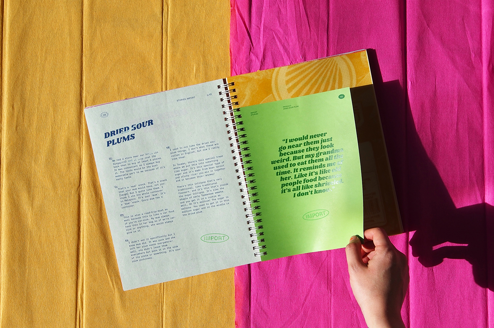
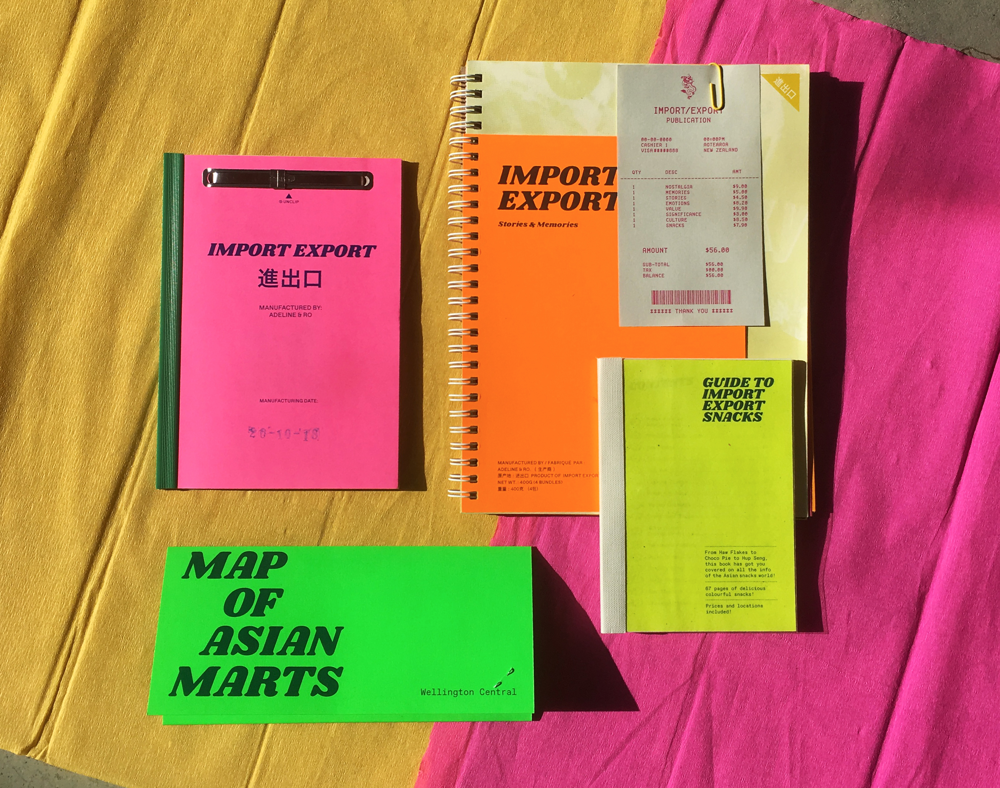

2018
IMPORT EXPORT
Food is important to many of us as it is a way to stay connected to our cultural roots. Our project IMPORT EXPORT focuses on sharing our culture through stories of Asian snacks from not only Asians but also other ethnicities— creating a conversation and an exchange of cultures and perspectives. Throughout this project, we have explored the aesthetics of the vernacular which can be seen often in Asian food packagings and supermarkets. We have collected and compiled a range of personal stories into a package; this can be essentially seen as a gift of our culture to you!